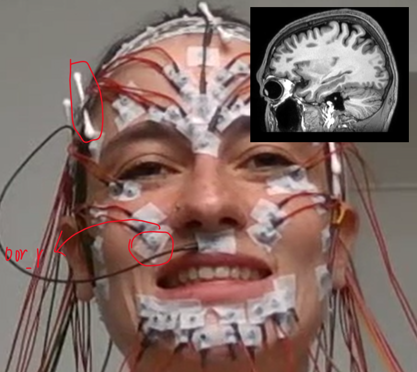
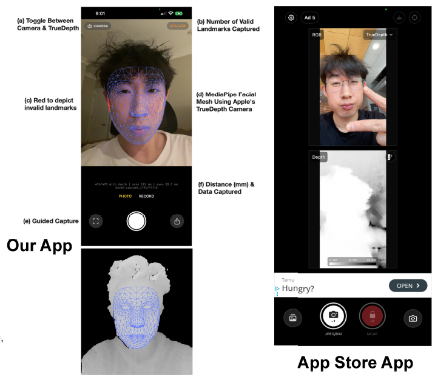
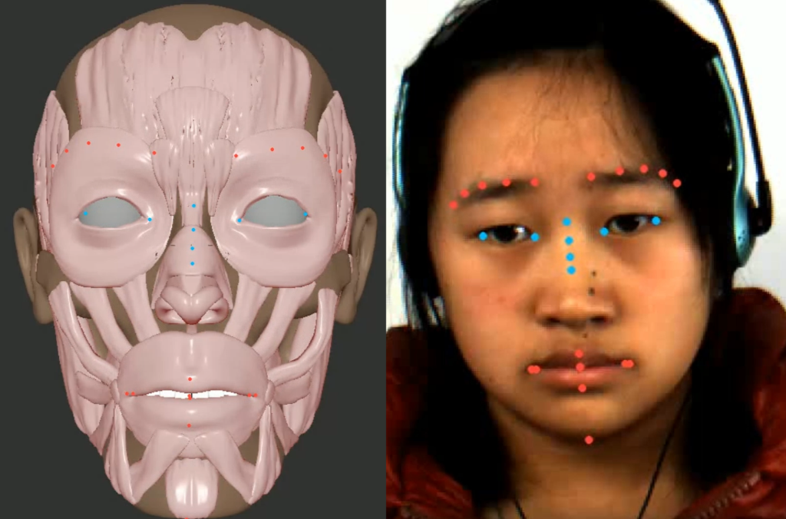
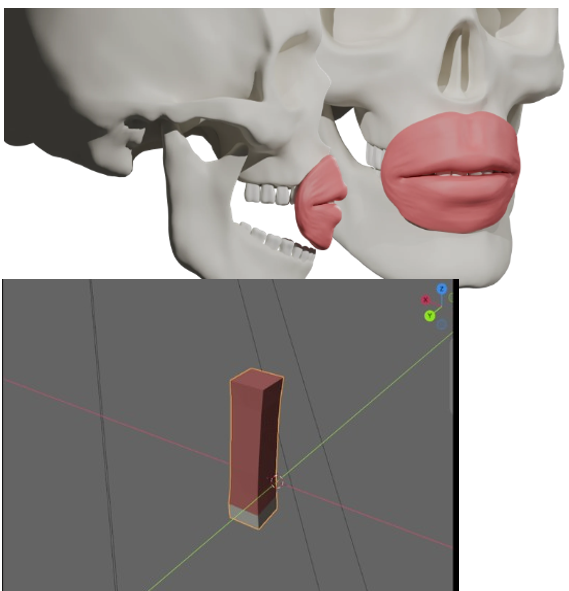
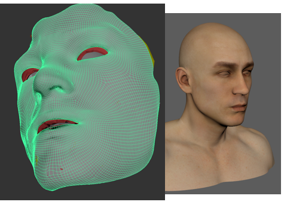
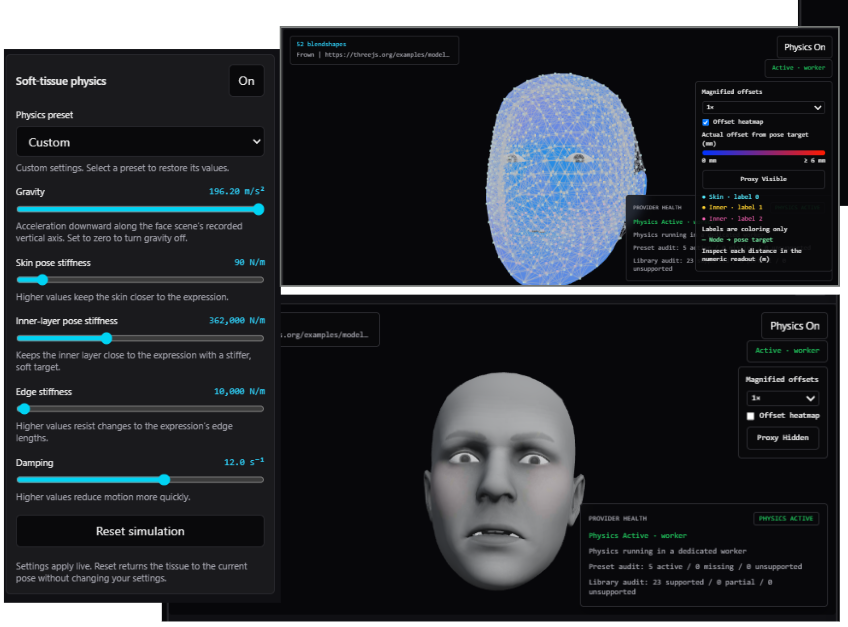
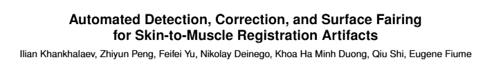
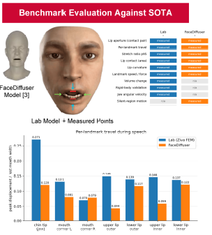

Our Lab Members & Research Team
We are an interdisciplinary team at Simon Fraser University researching physically and biomechanically based facial animation, soft-tissue continuum solvers, high-resolution biological ground-truth validation (MRI & sEMG), speech coarticulation, and interactive character graphics, affiliated with the GrUVi ({graphics} ∪ {vision}) Laboratory.
Research Lead & Mentor

Zhiyun (Richard) Peng 彭志云

Group Members
Roster
Mirza Zaeem Baig


Siyan Luo


Jacqueline Yang

Sophia Don Tranho


William Huang

Kissinger Chen

Karl Onasa


Ryan Marwaha

Daiwik Marrott

Viktor Zepeda Sanchez

Oleh Kutryk

Nikolay Deinego

Yaoting Wang


Qiu Shi


Feifei Yu (Faye)


Khoa (Elton) Ha Minh Duong

[Open Research Slot 2]
members.html & Drop Thumbnail
[Open Research Slot 3]
members.html & Drop Thumbnail
Lab Alumni
Alumni
Stella

Ilian Khankhalaev
On-Going Research Projects Deep Dive
7 ProjectsValidating Physically Based Facial Animation via Biological Ground Truth
A persistent challenge in physically based facial animation is proving that simulated muscle trajectories accurately reflect true human biology, rather than merely producing visually plausible surface deformations. In this project, the student will address this by quantitatively evaluating our lab’s facial simulation framework against biological ground truth. The initial phase will involve building an automated error-metric pipeline to carefully compare our simulated muscle activations and landmark displacement paths against open-access dynamic magnetic resonance imaging (MRI) and surface electromyography (sEMG) datasets. If existing public datasets prove insufficient, unstructured, or too noisy for a direct one-to-one comparison, the project will strategically pivot to defining an in-vivo validation protocol. This alternative pathway will explore how we can actively measure actual muscle changes and firing rates via localized MRI scans and/or sEMG to verify the physical grounding of our model.
As the project progresses, the student will seamlessly integrate their findings into three core deliverables. First, they will develop a robust evaluation pipeline, specifically a Python-based error-metric tool designed for calculating precise deviations between simulated biomechanical paths and recorded physiological data. Second, they will produce a detailed comparative analysis, culminating in a quantitative study that maps the simulation's structural integrity and energy dynamics against actual human data. Finally, the student will synthesize their findings into a formal academic report or a comprehensive proposed in-vivo data collection protocol, establishing a definitive foundation to prove the anatomical correctness of the simulation for future research.
Poster Submission: Visual Computing Workshop SFU 2026 Poster.pdf — Benchmark evaluation against SOTA (Lab Ziva FEM vs. FaceDiffuser across speech landmarks, conducted by Sophia Don Tranho and Stella).

Synthesizing Fine-Grained Facial Dynamics: Micro-Expressions and Indigenous Phonemes
While current facial animation models are heavily optimized for standard English phonemes and exaggerated macro-expressions, they often fail to capture highly specific, fine-grained facial dynamics. In this project, the student will push the limits of our physically based facial simulation framework by targeting two complex articulation categories. First, they will synthesize the unique phonetic inventories of Canadian Indigenous languages (such as Coast Salish or Hul’q’umi’num’), which demand highly specific lip-rounding and facial tension for ejective sounds. Second, they will simulate involuntary micro-expressions—like repressed smiles or fleeting brow furrows—by injecting asymmetric, high-frequency, low-duration muscle bursts into the pipeline. The goal is to isolate the specific motor unit activations required for these complex movements and determine if our physical parameters can accurately capture such distinct skin, lip, and jaw dynamics without losing structural volume.
Throughout the project, the student will operate as a rigorous experimentalist at the intersection of computer graphics, linguistics, and psychology. They will learn to manage a complex academic pipeline, design targeted experiments based on phonetic and affective data, and critically evaluate the physical output against real-world video references. Ultimately, the student will produce a documented asset library of muscle activation parameters tailored for these fine-grained movements. Alongside this database, they will deliver a visual and numerical comparative analysis measuring temporal strain distribution and jaw displacement against real human footage, culminating in an academic report evaluating whether the current simulation natively handles these high-frequency articulatory movements or requires novel co-activation strategies.
Automated 3D Asset Generation for Physically Based Facial Animation
Generating personalized, physically accurate 3D face models for animation currently requires tedious manual setup and topological tweaking. This project explores how to fully automate the construction of personalized facial assets to streamline physically based facial animation. The student will investigate two distinct initialization pathways. First, they will develop a lightweight vision pipeline using smartphone video and landmark tracking (e.g., MediaPipe) to infer rough skull dimensions, rest muscle anchor points, and personalized skin mesh boundary initialization. Second, they will evaluate a highly robust alternative: automating the generation of these boundaries directly from cross-individual volumetric scans (like MRI). The objective is to establish a reliable, automated starting point for facial meshes before the physical solver takes over.
To achieve this, the student will build a prototype initialization tool—a script that ingests video or scan data and outputs personalized muscle anchors and skin boundaries. Alongside this tool, they will produce a comparative analysis evaluating the accuracy, computational cost, and accessibility of both approaches. The project will culminate in a technical report detailing the registration pipeline, its success rate, and its viability for scaling personalized avatars.
Project Website / Codebase: github.com/sophiadt/bts-proj3 — Summer 2026 project by Sophia Don Tranho and Stella: iOS TrueDepth and MediaPipe guided capture app for automated 3D facial asset generation.
Develop Physical Simulator (IdeaVibes Competition & Side-Project Opportunity)
There is a Silicon Valley based AI start-up (IdeaVibes) collaborating with SFU Prof. Jiangchuan Liu (a Fellow of the Royal Society of Canada) that hosts an entrepreneur competition program. The competition is to build a showcase website to make full use of State-of-the-Art LLMs with access to tokens via a specialized developer portal.
Our lab's role is to build an online interactive demo of our facial model (Interactive Prototype).
- This demo is purely kinematic simulation (no physics, no muscles). We aim to mount the whole project simulation to the website step by step, while maintaining the interactive speed of the simulation.
- The lab's model previously used Ziva as the physical simulator. In this project, we will smartly query SOTA LLMs to build a functional in-house physical simulator: first we add gravity, then strain energy, then collision response, etc.
- Top contributors will lead extensions into "A Micro-Study of the Zygomaticus Muscle Simulation" from SFU courses, offering strong presentation impact.
- Transport the project from the IdeaVibes repository to our lab's GitHub repository, operating independently while remaining fully functional.
- Timeline: Competition deadline extended to January 20, 2027 (~30 North American teams competing).
Automated Pipeline for Skin-to-Muscle Registration for the Whole Head
Preparing biomechanical models often requires tedious manual "tinkering" by artists to wrap and register an epidermal skin mesh over customized internal musculature. This project tackles a classic geometry processing problem by attempting to automate this workflow. The student will explore algorithms like Non-Rigid Iterative Closest Point (ICP) or Laplacian surface editing to programmatically shrink-wrap and align the outer skin to the inner volume, reducing reliance on manual tools or heavy proprietary software (like Ziva) for this specific step.
"Automated Detection, Correction, and Surface Fairing for Skin-to-Muscle Registration Artifacts"
Authors: Ilian Khankhalaev, Zhiyun Peng, Feifei Yu, Nikolay Deinego, Khoa Ha Minh Duong, Qiu Shi, Eugene Fiume
November 21, 2026 • SFU Harbour Centre • [Accepted Poster] (Presented / Led by Feifei (Faye) Yu)
- Code: A standalone Python or C++ tool/script that takes a generic skin mesh and target musculature, and automatically outputs a registered skin mesh.
- Evaluation: A visual and numerical comparison between the automated registration and the manual registration.
- Academic Output: A technical report detailing the algorithm's speedup (e.g., reducing hours of manual work to minutes), which is highly publishable as a technical brief.
In-House Physical Soft-Tissue Simulator (FEM / XPBD Solver Core)
Engineering an independent, high-performance soft-tissue and biomechanical physical simulator tailored specifically for facial animation, replacing legacy commercial solvers with continuum mechanics, hyperelastic constitutive strain energy models, volume preservation, and multi-layered anatomical tissue coupling.
Learning-Based Acceleration for Piano-Style Interface
Our biomechanically grounded facial framework features a piano-style interactive performance interface where polyphonic key inputs dynamically trigger facial action controllers, phoneme activations, and expressive co-articulations. While physically based continuum solvers yield anatomical realism, evaluating complex non-linear finite elements or position-based dynamics in real time can induce frame latency. Project C7 resolves this computational bottleneck by developing deep learning surrogate models and physics-informed neural network (PINN) architectures that approximate solver dynamics. By learning high-dimensional non-linear soft-tissue deformation mappings from physical simulation trajectories, this pipeline achieves zero-latency, 60 FPS performance on consumer hardware while preserving critical physical volume conservation.